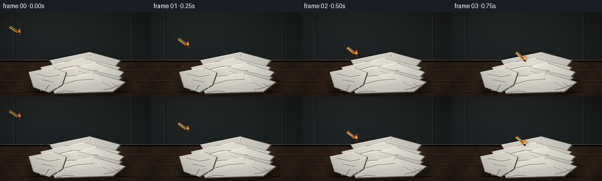
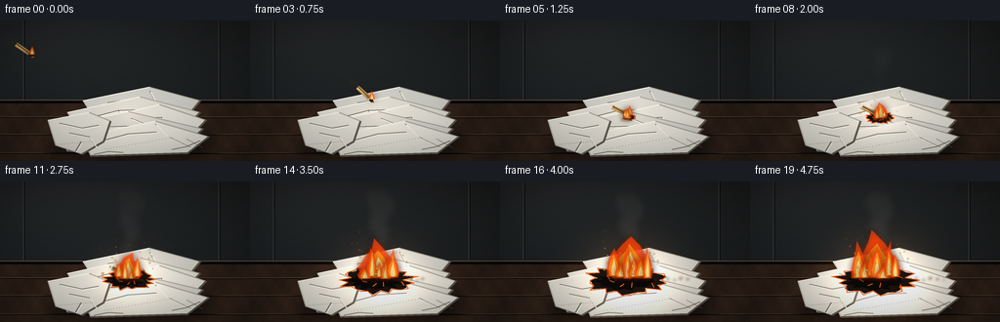

CODING AGENTS AS PIXEL WORLD MODELS
traex/DeepSeek-V4.1-Flash · material_0029
点击播放 · 原生 RGB 像素
逐轮保存的候选
回放视频、检查图与代码变化。
每份候选均可单独播放。实际图片检查记录在下方工具轨迹中。
候选 01播放与检查图
点击播放 · 原生 RGB 像素


展开代码变化
--- 上一保存版本
+++ 本次保存版本
@@ -0,0 +1,529 @@
+from __future__ import annotations
+
+import math
+from pathlib import Path
+
+import numpy as np
+from PIL import Image, ImageDraw, ImageFilter
+
+from artifact_io import save
+
+
+ROOT = Path(__file__).resolve().parent
+WIDTH, HEIGHT, FRAMES, FPS = 256, 144, 20, 4.0
+SS = 4
+CW, CH = WIDTH * SS, HEIGHT * SS
+RNG = np.random.default_rng(17)
+
+
+def pt(x: float, y: float) -> tuple[int, int]:
+ return round(x * SS), round(y * SS)
+
+
+def points(values: list[tuple[float, float]]) -> list[tuple[int, int]]:
+ return [pt(x, y) for x, y in values]
+
+
+def rgba(color: tuple[int, int, int], alpha: int = 255) -> tuple[int, int, int, int]:
+ return color[0], color[1], color[2], alpha
+
+
+def clamp(value: float, low: float = 0.0, high: float = 1.0) -> float:
+ return max(low, min(high, value))
+
+
+def smoothstep(edge0: float, edge1: float, value: float) -> float:
+ x = clamp((value - edge0) / (edge1 - edge0))
+ return x * x * (3.0 - 2.0 * x)
+
+
+def blurred_noise(width: int, height: int, sigma: float, seed: int) -> np.ndarray:
+ rng = np.random.default_rng(seed)
+ noise = rng.normal(0.0, 1.0, (height, width)).astype(np.float32)
+ image = Image.fromarray(np.uint8(np.clip(noise * 30.0 + 128.0, 0, 255)))
+ image = image.filter(ImageFilter.GaussianBlur(sigma))
+ return (np.asarray(image, dtype=np.float32) - 128.0) / 42.0
+
+
+def build_background() -> Image.Image:
+ yy, xx = np.mgrid[0:CH, 0:CW].astype(np.float32)
+ xn = xx / CW
+ yn = yy / CH
+
+ wall = np.empty((CH, CW, 3), dtype=np.float32)
+ wall[..., 0] = 27.0 + 8.0 * (1.0 - yn) + 3.0 * xn
+ wall[..., 1] = 31.0 + 8.0 * (1.0 - yn) + 2.0 * xn
+ wall[..., 2] = 34.0 + 7.0 * (1.0 - yn)
+ wall *= 0.82 + 0.18 * np.clip(1.0 - 0.8 * xn, 0.0, 1.0)[..., None]
+
+ horizon = 82.0
+ table_mask = yy >= horizon * SS
+ wood = np.empty_like(wall)
+ table_y = np.clip((yy / SS - horizon) / (HEIGHT - horizon), 0.0, 1.0)
+ grain = (
+ np.sin(xx * 0.024 + table_y * 6.0)
+ + 0.55 * np.sin(xx * 0.073 - table_y * 13.0)
+ + 0.30 * np.sin(xx * 0.16 + table_y * 22.0)
+ )
+ fine = blurred_noise(CW, CH, 2.0, 3)
+ wood[..., 0] = 45.0 + 8.0 * table_y + 3.6 * grain + 1.2 * fine
+ wood[..., 1] = 32.0 + 6.0 * table_y + 2.6 * grain + 0.9 * fine
+ wood[..., 2] = 24.0 + 4.0 * table_y + 1.8 * grain + 0.6 * fine
+ wall = np.where(table_mask[..., None], wood, wall)
+
+ glow = np.exp(-(((xn - 0.18) / 0.50) ** 2 + ((yn - 0.05) / 0.45) ** 2) * 1.8)
+ wall += glow[..., None] * np.array([6.0, 5.0, 4.0], dtype=np.float32)
+
+ image = Image.fromarray(np.uint8(np.clip(wall, 0, 255)), "RGB").convert("RGBA")
+ draw = ImageDraw.Draw(image, "RGBA")
+
+ # Dim vertical wall panels and a softly lit table edge keep the room legible.
+ for x in (24.0, 224.0):
+ draw.line([pt(x, 0), pt(x, horizon)], fill=(75, 76, 72, 22), width=SS)
+ draw.line([pt(x + 0.8, 0), pt(x + 0.8, horizon)], fill=(8, 10, 11, 40), width=SS)
+ draw.line([pt(0, horizon), pt(WIDTH, horizon)], fill=(114, 100, 82, 32), width=2 * SS)
+ draw.line([pt(0, horizon + 1.3), pt(WIDTH, horizon + 1.3)], fill=(9, 8, 8, 110), width=3 * SS)
+
+ # A few shallow out-of-focus wood seams.
+ for y in (99.0, 117.0, 136.0):
+ draw.line([pt(0, y), pt(WIDTH, y + 0.5)], fill=(12, 8, 7, 55), width=SS)
+ draw.line([pt(0, y - 0.7), pt(WIDTH, y - 0.2)], fill=(90, 66, 45, 24), width=SS)
+
+ return image
+
+
+def make_paper_texture() -> Image.Image:
+ yy, xx = np.mgrid[0:CH, 0:CW].astype(np.float32)
+ broad = blurred_noise(CW, CH, 7.0, 9)
+ fine = blurred_noise(CW, CH, 1.1, 10)
+ fibers = 0.6 * np.sin(xx * 0.37 + yy * 0.13) + 0.4 * np.sin(yy * 0.51 - xx * 0.07)
+ value = np.clip(218.0 + broad * 9.0 + fine * 7.0 + fibers * 2.0, 195, 240)
+ alpha = np.uint8(np.clip(28.0 + np.abs(fine) * 13.0, 0, 50))
+ texture = np.empty((CH, CW, 4), dtype=np.uint8)
+ texture[..., 0] = value
+ texture[..., 1] = value - 2
+ texture[..., 2] = value - 5
+ texture[..., 3] = alpha
+ return Image.fromarray(texture, "RGBA")
+
+
+PAPER_TEXTURE = make_paper_texture()
+TRANSPARENT = Image.new("RGBA", (CW, CH), (0, 0, 0, 0))
+
+
+def add_paper_sheet(
+ image: Image.Image,
+ polygon: list[tuple[float, float]],
+ fill: tuple[int, int, int],
+ creases: list[list[tuple[float, float]]],
+ dots: list[tuple[float, float]] | None = None,
+) -> None:
+ mask = Image.new("L", (CW, CH), 0)
+ ImageDraw.Draw(mask).polygon(points(polygon), fill=255)
+
+ paper = Image.new("RGBA", (CW, CH), rgba(fill))
+ paper.alpha_composite(Image.composite(PAPER_TEXTURE, TRANSPARENT, mask))
+ image.alpha_composite(Image.composite(paper, TRANSPARENT, mask))
+
+ draw = ImageDraw.Draw(image, "RGBA")
+ pp = points(polygon)
+ draw.line(pp + [pp[0]], fill=(100, 96, 87, 92), width=SS, joint="curve")
+ draw.line(pp + [pp[0]], fill=(245, 241, 228, 100), width=max(1, SS // 2))
+
+ # Slightly darker lower edge and a crisp upper fold catch light.
+ lower = [pp[2], pp[3], pp[4]]
+ draw.line(lower, fill=(94, 88, 78, 115), width=2 * SS, joint="curve")
+ draw.line([pp[0], pp[1]], fill=(252, 248, 237, 105), width=SS)
+
+ for line in creases:
+ cp = points(line)
+ draw.line(cp, fill=(118, 113, 102, 60), width=SS, joint="curve")
+ draw.line([(x + SS, y + SS) for x, y in cp], fill=(250, 246, 233, 52), width=SS)
+
+ if dots:
+ for x, y in dots:
+ px, py = pt(x, y)
+ draw.ellipse((px - 1, py - 1, px + 1, py + 1), fill=(113, 108, 98, 70))
+ draw.point((px, py - SS), fill=(255, 252, 240, 50))
+
+
+def build_paper_pile(image: Image.Image) -> None:
+ draw = ImageDraw.Draw(image, "RGBA")
+
+ # Contact shadow anchors the loose stack to the counter.
+ shadow = Image.new("RGBA", (CW, CH), (0, 0, 0, 0))
+ sd = ImageDraw.Draw(shadow, "RGBA")
+ sd.ellipse((pt(50, 113), pt(219, 142)), fill=(3, 3, 3, 150))
+ shadow = shadow.filter(ImageFilter.GaussianBlur(7 * SS))
+ image.alpha_composite(shadow)
+
+ add_paper_sheet(
+ image,
+ [(85, 82), (153, 68), (205, 82), (186, 105), (102, 108)],
+ (202, 201, 193),
+ [
+ [(110, 84), (139, 80), (166, 86)],
+ [(153, 72), (161, 87), (180, 99)],
+ ],
+ )
+ add_paper_sheet(
+ image,
+ [(69, 94), (143, 78), (205, 94), (184, 115), (84, 118)],
+ (219, 216, 205),
+ [
+ [(82, 102), (121, 92), (150, 91), (180, 101)],
+ [(121, 92), (132, 107), (167, 109)],
+ ],
+ )
+ add_paper_sheet(
+ image,
+ [(89, 103), (163, 86), (211, 102), (191, 123), (76, 124)],
+ (228, 225, 214),
+ [
+ [(98, 111), (134, 101), (165, 99)],
+ [(165, 99), (174, 111), (194, 118)],
+ ],
+ )
+ add_paper_sheet(
+ image,
+ [(58, 109), (131, 93), (208, 111), (184, 132), (69, 134)],
+ (213, 211, 202),
+ [
+ [(74, 117), (104, 109), (132, 108)],
+ [(134, 100), (158, 110), (181, 125)],
+ ],
+ )
+ add_paper_sheet(
+ image,
+ [(83, 118), (159, 103), (214, 119), (192, 136), (93, 139)],
+ (234, 231, 220),
+ [
+ [(101, 124), (131, 116), (160, 114)],
+ [(159, 106), (172, 119), (195, 130)],
+ ],
+ dots=[(107 + i * 3.1, 132 - i * 0.55) for i in range(23)],
+ )
+
+ # A torn towel hangs toward the front-left, adding depth and identifying the material.
+ add_paper_sheet(
+ image,
+ [(49, 102), (91, 94), (113, 103), (106, 124), (84, 137), (57, 128)],
+ (224, 221, 210),
+ [
+ [(61, 105), (84, 110), (101, 107)],
+ [(71, 115), (91, 119), (98, 129)],
+ [(83, 124), (77, 134)],
+ ],
+ dots=[(57 + i * 2.2, 127 - i * 0.18) for i in range(18)],
+ )
+
+ # Fine wrinkles and the perforated edge make the white pile read as dry towels.
+ draw.line(points([(96, 137), (111, 134), (126, 135)]), fill=(125, 119, 106, 72), width=SS)
+ draw.line(points([(176, 132), (191, 129), (205, 123)]), fill=(122, 117, 104, 65), width=SS)
+ for i in range(14):
+ x = 191 + i * 1.2
+ y = 121 + i * 0.65
+ draw.line([pt(x, y), pt(x + 0.25, y + 1.0)], fill=(103, 99, 90, 80), width=max(1, SS // 2))
+
+
+def make_static_scene() -> Image.Image:
+ image = build_background()
+ build_paper_pile(image)
+ return image
+
+
+STATIC_SCENE = make_static_scene()
+
+
+def match_position(frame: int) -> tuple[float, float, float]:
+ if frame <= 3:
+ f = frame / 3.0
+ x = 32.0 + 92.0 * f
+ y = 35.0 + 46.0 * f + 7.0 * (1.0 - (2.0 * f - 1.0) ** 2)
+ angle = math.radians(34.0 + 8.0 * f)
+ return x, y, angle
+ return 132.0, 97.0, math.radians(26.0)
+
+
+def draw_match_stick(
+ image: Image.Image,
+ x: float,
+ y: float,
+ angle: float,
+ flying: bool,
+ flame_scale: float,
+ phase: float,
+) -> None:
+ draw = ImageDraw.Draw(image, "RGBA")
+ length = 19.0
+ width = 2.15
+ dx, dy = math.cos(angle), math.sin(angle)
+ nx, ny = -dy, dx
+ tail_x, tail_y = x - dx * length, y - dy * length
+
+ if flying:
+ trail = Image.new("RGBA", (CW, CH), (0, 0, 0, 0))
+ td = ImageDraw.Draw(trail, "RGBA")
+ for i in range(5):
+ off = 2.5 + i * 2.3
+ tx, ty = tail_x - dx * off, tail_y - dy * off
+ td.ellipse(
+ (pt(tx - 1.8, ty - 1.8), pt(tx + 1.8, ty + 1.8)),
+ fill=(255, 151, 46, 32 - i * 5),
+ )
+ trail = trail.filter(ImageFilter.GaussianBlur(2 * SS))
+ image.alpha_composite(trail)
+
+ stick = [
+ (tail_x + nx * width, tail_y + ny * width),
+ (x - dx * 2.7 + nx * width, y - dy * 2.7 + ny * width),
+ (x - dx * 2.7 - nx * width, y - dy * 2.7 - ny * width),
+ (tail_x - nx * width, tail_y - ny * width),
+ ]
+ draw.polygon(points(stick), fill=(184, 143, 82, 255))
+ draw.line(points([(tail_x + nx * 0.7, tail_y + ny * 0.7), (x - dx * 3.2, y - dy * 3.2)]),
+ fill=(231, 194, 125, 175), width=SS)
+ draw.line(points([(tail_x - nx * 0.75, tail_y - ny * 0.75), (x - dx * 3.0, y - dy * 3.0)]),
+ fill=(93, 62, 34, 210), width=SS)
+
+ # Charred, swollen match head.
+ hx, hy = x, y
+ head = [
+ (hx + dx * 1.8 + nx * 2.0, hy + dy * 1.8 + ny * 2.0),
+ (hx + dx * 3.7, hy + dy * 3.7),
+ (hx - dx * 1.3 - nx * 1.7, hy - dy * 1.3 - ny * 1.7),
+ (hx - dx * 1.3 + nx * 2.1, hy - dy * 1.3 + ny * 2.1),
+ ]
+ draw.polygon(points(head), fill=(41, 29, 22, 255))
+ draw.line(points([head[0], head[1]]), fill=(255, 126, 31, 90), width=SS)
+
+ draw_flame(image, hx + dx * 0.9, hy + dy * 0.9 - 0.8, 4.7 * flame_scale, 9.0 * flame_scale, phase, 0.9)
+
+
+def flame_polygon(cx: float, cy: float, width: float, height: float, phase: float, lean: float = 0.0) -> list[tuple[float, float]]:
+ wobble = 0.12 * math.sin(phase * 1.7) + 0.06 * math.sin(phase * 3.3 + 1.2)
+ tip_x = cx + lean + width * wobble
+ tip_y = cy - height * (0.93 + 0.08 * math.sin(phase * 2.2))
+ return [
+ (cx - width * 0.53, cy),
+ (cx - width * 0.63 + width * 0.08 * math.sin(phase), cy - height * 0.25),
+ (cx - width * 0.43 + width * 0.10 * math.sin(phase + 0.8), cy - height * 0.52),
+ (cx - width * 0.23, cy - height * 0.70),
+ (tip_x, tip_y),
+ (cx + width * 0.24 + width * 0.06 * math.cos(phase * 1.4), cy - height * 0.66),
+ (cx + width * 0.50, cy - height * 0.37),
+ (cx + width * 0.60 + width * 0.07 * math.cos(phase + 0.5), cy - height * 0.14),
+ (cx + width * 0.48, cy),
+ ]
+
+
+def draw_flame(
+ image: Image.Image,
+ cx: float,
+ cy: float,
+ width: float,
+ height: float,
+ phase: float,
+ strength: float = 1.0,
+) -> None:
+ if width < 0.2 or height < 0.2:
+ return
+ layer = Image.new("RGBA", (CW, CH), (0, 0, 0, 0))
+ draw = ImageDraw.Draw(layer, "RGBA")
+ outer = flame_polygon(cx, cy, width, height, phase, lean=width * 0.10 * math.sin(phase * 0.7))
+ draw.polygon(points(outer), fill=(255, 65, 8, int(185 * strength)))
+ glow = layer.filter(ImageFilter.GaussianBlur(3.4 * SS))
+ image.alpha_composite(glow)
+
+ middle = flame_polygon(cx, cy - height * 0.02, width * 0.66, height * 0.76, phase + 0.7)
+ draw.polygon(points(middle), fill=(255, 145, 18, int(225 * strength)))
+ core = flame_polygon(cx, cy - height * 0.04, width * 0.34, height * 0.52, phase + 1.1)
+ draw.polygon(points(core), fill=(255, 235, 151, int(245 * strength)))
+ image.alpha_composite(layer)
+
+
+def add_fire_glow(image: Image.Image, intensity: float, fire_x: float, fire_y: float) -> None:
+ if intensity <= 0:
+ return
+ yy, xx = np.mgrid[0:CH, 0:CW].astype(np.float32)
+ x = xx / SS
+ y = yy / SS
+ radius = 28.0 + 26.0 * intensity
+ dist = ((x - fire_x) / radius) ** 2 + ((y - fire_y) / (radius * 0.80)) ** 2
+ glow = np.exp(-dist * 1.55) * intensity
+ glow += np.exp(-(((x - fire_x) / (radius * 0.42)) ** 2 + ((y - fire_y) / (radius * 0.38)) ** 2) * 2.1) * 0.72 * intensity
+
+ arr = np.asarray(image.convert("RGB"), dtype=np.float32)
+ warm = np.array([1.0, 0.53, 0.20], dtype=np.float32)
+ arr = arr * (1.0 + glow[..., None] * 0.34) + warm * glow[..., None] * 56.0
+ np.clip(arr, 0, 255, out=arr)
+ image.paste(Image.fromarray(np.uint8(arr), "RGB").convert("RGBA"))
+
+
+def irregular_ellipse(cx: float, cy: float, rx: float, ry: float, count: int, phase: float, jitter: float = 0.17) -> list[tuple[float, float]]:
+ result = []
+ for i in range(count):
+ a = 2.0 * math.pi * i / count
+ radial = 1.0 + jitter * math.sin(i * 2.7 + phase) + 0.08 * math.sin(i * 5.1 - phase * 0.7)
+ result.append((cx + math.cos(a) * rx * radial, cy + math.sin(a) * ry * radial))
+ return result
+
+
+def add_char(image: Image.Image, amount: float, phase: float) -> None:
+ if amount <= 0:
+ return
+ draw = ImageDraw.Draw(image, "RGBA")
+ rx = 5.0 + 32.0 * amount
+ ry = 2.5 + 11.0 * amount
+ cx = 132.0 + 3.0 * math.sin(phase * 0.35) * amount
+ cy = 99.0 + 2.0 * amount
+ shape = irregular_ellipse(cx, cy, rx, ry, 30, phase, 0.16)
+ draw.polygon(points(shape), fill=(29, 20, 16, int(225 * smoothstep(0.04, 0.25, amount))))
+
+ if amount > 0.22:
+ inner = irregular_ellipse(cx - 2.0, cy + 1.0, rx * 0.74, ry * 0.64, 24, phase + 1.1, 0.20)
+ draw.polygon(points(inner), fill=(11, 9, 8, int(205 * amount)))
+ for i in range(8):
+ a = i * 2.399 + phase * 0.07
+ r = 0.24 + 0.58 * ((i * 0.37) % 1.0)
+ x = cx + math.cos(a) * rx * r
+ y = cy + math.sin(a) * ry * r
+ length = 1.5 + 3.5 * amount
+ draw.line(
+ points([(x, y), (x + math.cos(a + 0.8) * length, y + math.sin(a + 0.8) * length)]),
+ fill=(255, 104, 24, int(135 + 70 * amount)),
+ width=SS,
+ )
+
+ # A thin warm ember rim reads as active combustion.
+ rim = irregular_ellipse(cx, cy, rx * 1.02, ry * 1.08, 30, phase + 0.3, 0.17)
+ draw.line(points(rim + [rim[0]]), fill=(255, 100, 21, int(70 + 90 * amount)), width=SS)
+
+
+def add_smoke(image: Image.Image, amount: float, phase: float) -> None:
+ if amount <= 0:
+ return
+ smoke = Image.new("RGBA", (CW, CH), (0, 0, 0, 0))
+ draw = ImageDraw.Draw(smoke, "RGBA")
+ puffs = 6 + int(amount * 7)
+ for i in range(puffs):
+ frac = (i / max(1, puffs - 1) + phase * 0.012) % 1.0
+ rise = 7.0 + frac * (58.0 + amount * 29.0)
+ drift = 8.0 * frac + 3.0 * math.sin(phase * 0.45 + i * 1.7)
+ x = 133.0 + drift - frac * 8.0
+ y = 92.0 - rise
+ size = 4.5 + frac * (8.0 + amount * 7.0) + 1.6 * math.sin(i * 2.1)
+ alpha = int((21 + amount * 25) * (0.55 + 0.45 * math.sin(math.pi * min(1.0, frac + 0.10))))
+ if y < 12:
+ continue
+ draw.ellipse((pt(x - size, y - size * 0.62), pt(x + size, y + size * 0.62)),
+ fill=(119, 113, 108, alpha))
+ draw.ellipse((pt(x - size * 0.40, y - size * 0.52), pt(x + size * 0.70, y + size * 0.30)),
+ fill=(160, 151, 140, max(0, alpha // 2)))
+ smoke = smoke.filter(ImageFilter.GaussianBlur(4.2 * SS))
+ image.alpha_composite(smoke)
+
+
+def add_sparks(image: Image.Image, amount: float, phase: float) -> None:
+ if amount <= 0:
+ return
+ layer = Image.new("RGBA", (CW, CH), (0, 0, 0, 0))
+ draw = ImageDraw.Draw(layer, "RGBA")
+ count = int(7 + amount * 22)
+ for i in range(count):
+ birth = (i * 0.61803398875 + phase * 0.032) % 1.0
+ x = 127.0 + 26.0 * math.sin(i * 2.17 + phase * 0.2) + 9.0 * math.sin(birth * 5.0)
+ y = 97.0 - birth * (25.0 + amount * 25.0)
+ size = 0.35 + 0.75 * ((i * 0.37) % 1.0)
+ alpha = int(255 * (1.0 - birth) * min(1.0, amount * 1.6))
+ draw.ellipse((pt(x - size, y - size), pt(x + size, y + size)), fill=(255, 185, 62, alpha))
+ image.alpha_composite(layer.filter(ImageFilter.GaussianBlur(0.35 * SS)))
+
+
+def draw_main_fire(image: Image.Image, t: float, frame: int) -> None:
+ if frame <= 3:
+ return
+ growth = smoothstep(1.0, 4.6, t)
+ if growth <= 0:
+ return
+
+ phase = frame * 1.73
+ # The early fire clings to the match contact point, then races across the stack.
+ base_x = 132.0 + 2.0 * math.sin(frame * 0.9)
+ base_y = 100.0 - 1.2 * growth
+ main_w = 7.0 + 31.0 * growth
+ main_h = 10.0 + 43.0 * growth
+ draw_flame(image, base_x, base_y, main_w, main_h, phase, 0.98)
+
+ tongues = 2 + int(growth * 5)
+ for i in range(tongues):
+ u = (i + 0.5) / tongues
+ x = base_x + (u - 0.5) * (main_w * 1.15)
+ h = main_h * (0.28 + 0.50 * (0.5 + 0.5 * math.sin(i * 2.4 + phase)))
+ w = main_w * (0.20 + 0.16 * (0.5 + 0.5 * math.cos(i * 1.7)))
+ y = base_y - 0.7 + 1.3 * math.sin(i * 1.9 + phase * 0.6)
+ draw_flame(image, x, y, w, h, phase + i * 1.13, 0.75 + 0.20 * growth)
+
+ # Hot coals at the contact line.
+ glow = Image.new("RGBA", (CW, CH), (0, 0, 0, 0))
+ gd = ImageDraw.Draw(glow, "RGBA")
+ for i in range(10 + int(10 * growth)):
+ x = base_x + (i / 10.0 - 0.5) * main_w * 1.25 + 2.0 * math.sin(i * 2.1)
+ y = base_y + 1.0 + 1.2 * math.sin(i * 1.4)
+ size = 0.7 + 0.9 * ((i * 0.43) % 1.0)
+ gd.ellipse((pt(x - size, y - size * 0.55), pt(x + size, y + size * 0.55)),
+ fill=(255, 126, 23, 185))
+ image.alpha_composite(glow.filter(ImageFilter.GaussianBlur(1.3 * SS)))
+
+
+def add_vignette_and_grain(image: Image.Image, frame: int) -> Image.Image:
+ yy, xx = np.mgrid[0:CH, 0:CW].astype(np.float32)
+ xn = xx / CW - 0.5
+ yn = yy / CH - 0.5
+ vignette = np.clip(1.0 - 0.47 * (xn * xn + yn * yn) * 1.9, 0.60, 1.0)
+ arr = np.asarray(image.convert("RGB"), dtype=np.float32)
+ arr *= vignette[..., None]
+
+ # Fine, static sensor grain plus a tiny per-frame component.
+ grain = blurred_noise(CW, CH, 0.55, 40 + frame)
+ arr += grain[..., None] * np.array([2.1, 2.0, 1.8], dtype=np.float32)
+ np.clip(arr, 0, 255, out=arr)
+ return Image.fromarray(np.uint8(arr), "RGB").convert("RGBA")
+
+
+def render_frame(frame: int) -> np.ndarray:
+ t = frame / FPS
+ image = STATIC_SCENE.copy()
+
+ ignition = smoothstep(1.00, 2.05, t)
+ fire_level = smoothstep(1.0, 4.8, t)
+ add_fire_glow(image, 0.08 + 0.96 * fire_level, 132.0, 98.0)
+
+ char_amount = smoothstep(1.0, 4.1, t)
+ add_char(image, char_amount, frame * 0.77)
+ add_smoke(image, smoothstep(1.5, 3.7, t), frame * 0.52)
+
+ x, y, angle = match_position(frame)
+ if frame <= 3:
+ draw_match_stick(image, x, y, angle, True, 1.0, frame * 2.0)
+ else:
+ draw_match_stick(image, x, y, angle, False, 0.74 + 0.45 * (1.0 - ignition), frame * 2.0)
+
+ draw_main_fire(image, t, frame)
+ add_sparks(image, smoothstep(1.2, 3.2, t), frame * 0.48)
+ image = add_vignette_and_grain(image, frame)
+
+ small = image.convert("RGB").resize((WIDTH, HEIGHT), Image.Resampling.LANCZOS)
+ return np.asarray(small, dtype=np.uint8)
+
+
+def main() -> None:
+ frames = np.stack([render_frame(i) for i in range(FRAMES)], axis=0)
+ assert frames.shape == (FRAMES, HEIGHT, WIDTH, 3)
+ assert frames.dtype == np.uint8
+ save(frames, ROOT)
+ print(f"saved {FRAMES} frames at {WIDTH}x{HEIGHT} to {ROOT}")
+
+
+if __name__ == "__main__":
+ main()
候选 02播放与检查图
点击播放 · 原生 RGB 像素

展开代码变化
--- 上一保存版本
+++ 本次保存版本
@@ -74,7 +74,7 @@
glow = np.exp(-(((xn - 0.18) / 0.50) ** 2 + ((yn - 0.05) / 0.45) ** 2) * 1.8)
wall += glow[..., None] * np.array([6.0, 5.0, 4.0], dtype=np.float32)
- image = Image.fromarray(np.uint8(np.clip(wall, 0, 255)), "RGB").convert("RGBA")
+ image = Image.fromarray(np.uint8(np.clip(wall, 0, 255))).convert("RGBA")
draw = ImageDraw.Draw(image, "RGBA")
# Dim vertical wall panels and a softly lit table edge keep the room legible.
@@ -104,7 +104,7 @@
texture[..., 1] = value - 2
texture[..., 2] = value - 5
texture[..., 3] = alpha
- return Image.fromarray(texture, "RGBA")
+ return Image.fromarray(texture)
PAPER_TEXTURE = make_paper_texture()
@@ -357,7 +357,7 @@
warm = np.array([1.0, 0.53, 0.20], dtype=np.float32)
arr = arr * (1.0 + glow[..., None] * 0.34) + warm * glow[..., None] * 56.0
np.clip(arr, 0, 255, out=arr)
- image.paste(Image.fromarray(np.uint8(arr), "RGB").convert("RGBA"))
+ image.paste(Image.fromarray(np.uint8(arr)).convert("RGBA"))
def irregular_ellipse(cx: float, cy: float, rx: float, ry: float, count: int, phase: float, jitter: float = 0.17) -> list[tuple[float, float]]:
@@ -488,7 +488,7 @@
grain = blurred_noise(CW, CH, 0.55, 40 + frame)
arr += grain[..., None] * np.array([2.1, 2.0, 1.8], dtype=np.float32)
np.clip(arr, 0, 255, out=arr)
- return Image.fromarray(np.uint8(arr), "RGB").convert("RGBA")
+ return Image.fromarray(np.uint8(arr)).convert("RGBA")
def render_frame(frame: int) -> np.ndarray:
可观测工具轨迹
实际执行的命令与返回图片。
命令 1exit 0
/bin/bash -c "pwd && rg --files -g 'prompt.txt' -g 'GENERATION_RULES.md' -g 'task_spec.json' -g '"'!node_modules'"' -g '"'!venv'"'"
命令 2exit 0
/bin/bash -c "find . -maxdepth 2 -type f -printf '%p\\n' | sort | head -200"
命令 3exit 0
/bin/bash -c 'git status --short --branch'
命令 4exit 0
/bin/bash -c 'cat prompt.txt'
命令 5exit 0
/bin/bash -c 'cat GENERATION_RULES.md'
命令 6exit 0
/bin/bash -c 'cat task_spec.json'
命令 7exit 0
/bin/bash -c "sed -n '1,260p' artifact_io.py"
命令 8exit 0
/bin/bash -c 'python generate.py'
命令 9exit 127
/bin/bash -c 'du -h pixels.npz index.html inspection.png frames/*.png | tail -25 && identify inspection.png frames/00.png frames/10.png frames/19.png'
命令 10exit 0
/bin/bash -c "python - <<'PY'
from PIL import Image
import numpy as np
for i in range(20):
a=np.asarray(Image.open(f'frames/{i:02d}.png')).astype(float)
warm=(a[...,0]-a[...,2]).mean()
bright=(a.mean(axis=2)>185).sum()
print(f'{i:02d} mean={a.mean():6.2f} warm={warm:6.2f} bright_px={bright:5d}')
PY"命令 11exit 0
/bin/bash -c "python - <<'PY'
from PIL import Image
import numpy as np
chars=' .,:;irsXA253hMHGS#9B&@'
for idx in (0,3,6,10,14,19):
a=np.asarray(Image.open(f'frames/{idx:02d}.png').convert('L').resize((64,28)))
print(f'\\nFRAME {idx:02d}')
for row in a:
print(''.join(chars[min(len(chars)-1,int(v)*len(chars)//256)] for v in row))
PY"命令 12exit 0
/bin/bash -c 'command -v ffmpeg || true; command -v chafa || true; command -v viu || true; command -v jp2 || true; command -v img2txt || true; command -v python'
命令 13exit 0
/bin/bash -c "python - <<'PY'
from PIL import Image
import numpy as np
for idx in [0,1,2,3,4,5,8,12,16,19]:
a=np.asarray(Image.open(f'frames/{idx:02d}.png')).astype(np.float32)
# count regions by semantic-ish colors
r,g,b=a[...,0],a[...,1],a[...,2]
fire=(r>170)&(r>g*1.35)&(g>b*1.25)
white=(a.mean(2)>170)&(np.max(a,2)-np.min(a,2)<35)
dark=(a.mean(2)<35)
ys,xs=np.nonzero(fire)
bbox='none' if not len(xs) else f'{xs.min()},{ys.min()}-{xs.max()},{ys.max()}'
print(idx, 'fire',len(xs),'bbox',bbox,'white',white.sum(),'dark',dark.sum())
PY"命令 14exit 0
/bin/bash -c 'python generate.py'
命令 15exit 1
/bin/bash -c "python - <<'PY'
from pathlib import Path
import json
import numpy as np
from PIL import Image
spec=json.loads(Path('task_spec.json').read_text())
files=sorted(Path('frames').glob('*.png'))
assert len(files)==spec['frames']==20
frames=[]
for i,p in enumerate(files):
assert p.name==f'{i:02d}.png'
im=Image.open(p)
assert im.size==(spec['width'],spec['height']) and im.mode=='RGB'
frames.append(np.asarray(im))
frames=np.stack(frames)
with np.load('pixels.npz') as data:
packed=data['pixels']
assert packed.shape==(spec['height'],spec['width'],spec['frames'])
decoded=np.stack([((packed[...,i]>>16)&255, (packed[...,i]>>8)&255, packed[...,i]&255) for i in range(spec['frames'])],axis=-1)
assert np.array_equal(decoded.transpose(2,0,1,3),frames)
html=Path('index.html').read_text()
assert '__DATA__' not in html and '__ID__' not in html
assert all(k in html for k in ('pixels.npz','canvas'))
assert Path('inspection.png').stat().st_size>0 and Path('transition_check.png').stat().st_size>0
print('validated frames:',frames.shape,frames.dtype)
print('frame diff range:',min(float(np.abs(frames[i].astype(int)-frames[i-1]).mean()) for i in range(1,20)),max(float(np.abs(frames[i].astype(int)-frames[i-1]).mean()) for i in range(1,20)))
print('artifacts:',[(p.name,p.stat().st_size) for p in [Path('pixels.npz'),Path('index.html'),Path('inspection.png')]])
PY"命令 16exit 0
/bin/bash -c "python - <<'PY'
from pathlib import Path
import numpy as np
from PIL import Image
frames=np.stack([np.asarray(Image.open(f'frames/{i:02d}.png')) for i in range(20)])
with np.load('pixels.npz') as d: p=d['pixels']
print(frames.shape,p.shape,p.dtype)
for i in [0,1,10,19]:
x=p[...,i]
rec=np.stack([(x>>16)&255,(x>>8)&255,x&255],axis=-1)
diff=np.abs(rec.astype(int)-frames[i].astype(int))
print(i,diff.max(),np.count_nonzero(diff))
html=Path('index.html').read_text()
print('__DATA__', '__DATA__' in html, '__ID__' in html, 'canvas' in html, 'pixels.npz' in html)
print(html[:300])
PY"命令 17exit 0
/bin/bash -c "python - <<'PY'
from pathlib import Path
import json
import numpy as np
from PIL import Image
spec=json.loads(Path('task_spec.json').read_text())
files=sorted(Path('frames').glob('*.png'))
assert len(files)==spec['frames']==20
frames=[]
for i,p in enumerate(files):
assert p.name==f'{i:02d}.png'
im=Image.open(p)
assert im.size==(spec['width'],spec['height']) and im.mode=='RGB'
frames.append(np.asarray(im))
frames=np.stack(frames)
with np.load('pixels.npz') as data:
packed=data['pixels']
assert packed.shape==(spec['height'],spec['width'],spec['frames'])
decoded=np.stack([np.stack([(packed[...,i]>>16)&255,(packed[...,i]>>8)&255,packed[...,i]&255],axis=-1) for i in range(spec['frames'])])
assert np.array_equal(decoded,frames)
html=Path('index.html').read_text()
assert '__DATA__' not in html and '__ID__' not in html and 'canvas' in html
assert Path('inspection.png').stat().st_size>0 and Path('transition_check.png').stat().st_size>0
diffs=[float(np.abs(frames[i].astype(int)-frames[i-1].astype(int)).mean()) for i in range(1,20)]
print('validated:',frames.shape,frames.dtype)
print(f'frame motion: min={min(diffs):.3f}, max={max(diffs):.3f}, all_nonzero={all(d>0 for d in diffs)}')
print('artifacts:',[(p.name,p.stat().st_size) for p in [Path('pixels.npz'),Path('index.html'),Path('inspection.png')]])
PY"保存候选 2 份；完成命令 17 次；可验证图片返回 0 张。原始 API 响应与完整日志保留在本地。